히어로 찐따미 전격 탐구
작품 속에서 활약하는
히어로들의 주옥같은 찐따미를 확인해보자!
 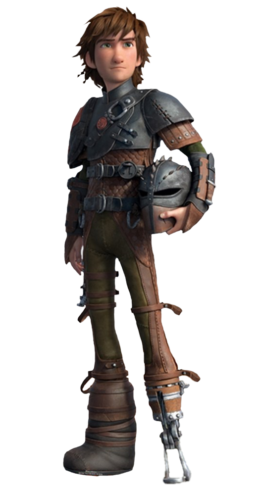
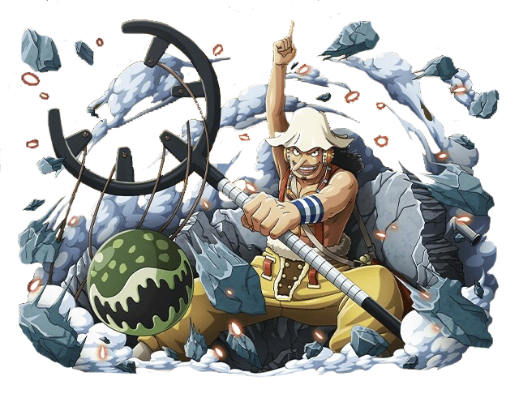
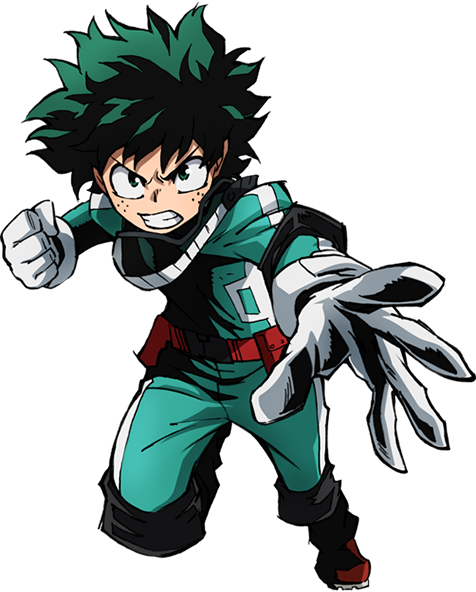
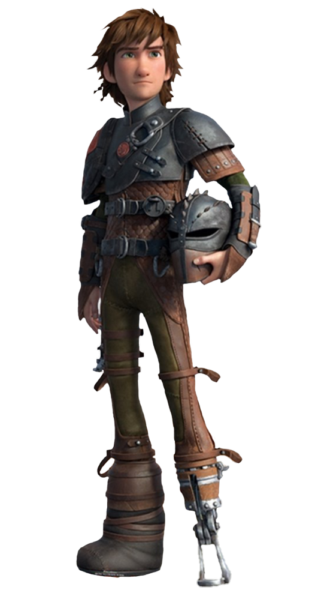
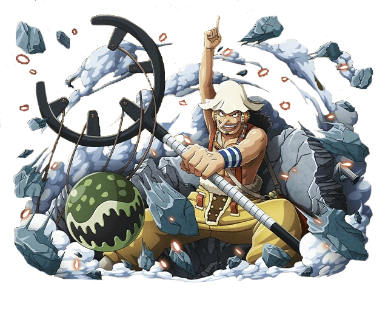
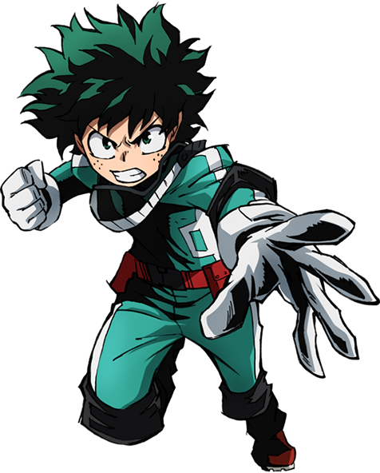
작품 속에서 활약하는
히어로들의 주옥같은 찐따미를 확인해보자!
'나의 히어로 아카데미아' 남주인공으로 초반에는
능력이 전혀 없는 너드로 나온다. 능력을 가진 후에도 찐따미는 어디가지
않고 빛을 발하며 그의 캐릭터성이 된다.
오타쿠
울보
호구
수많은 스파이더맨 시리즈 중 그가 찌질하지 않았던 적은 없었다.
적에게 끊임없이 입딜을 넣어주면서 상대방을 빡치게 하다가도 뒤돌아서서
궁상떠는 그의 모습은 많은 팬들을 설레게 한다.
 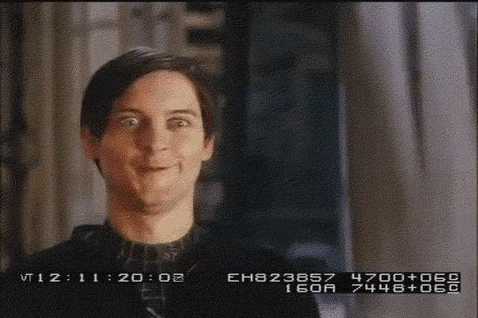
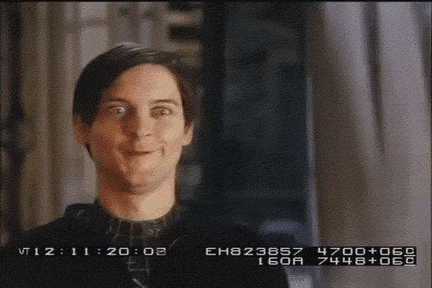
 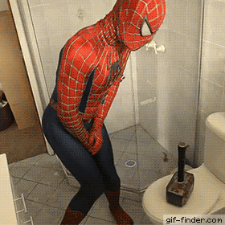
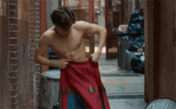
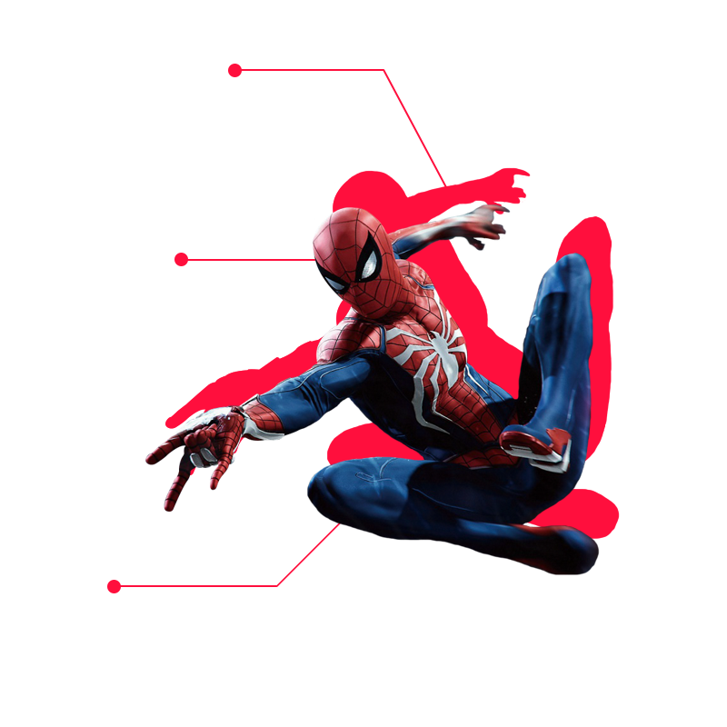
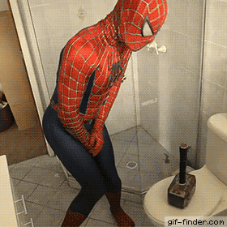
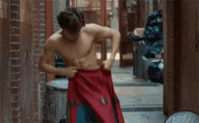
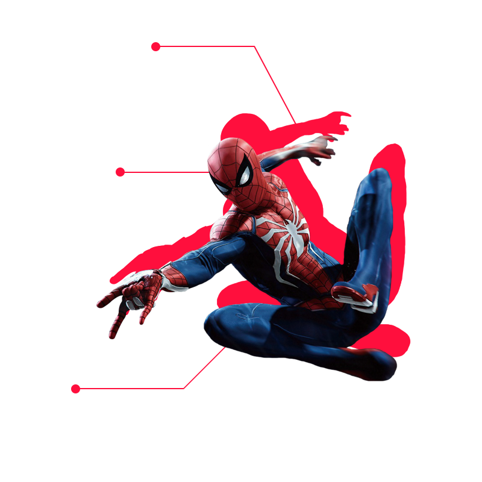
깐죽이
허세충
애송이
만화 '원피스'의 저격수 우솝은 부족한 자신을 거짓말로
포장하고 위기의 순간에 도망치기 일쑤다.
하지만 거짓말을 실현시켜버려 갓우솝이라는 별명을 얻게 되었다.